Items to look for
Looking for pasalubong or something for yourself? Near Nagoya Station you can try on OAO sneakers, shop GU and UNIQLO, and check the Panasonic palm shavers. In Tokyo, pick up sweet potato sticks near your meeting or browse vintage watches in Ginza.

Food and sweets
-
Imo kenpi · 芋けんぴ
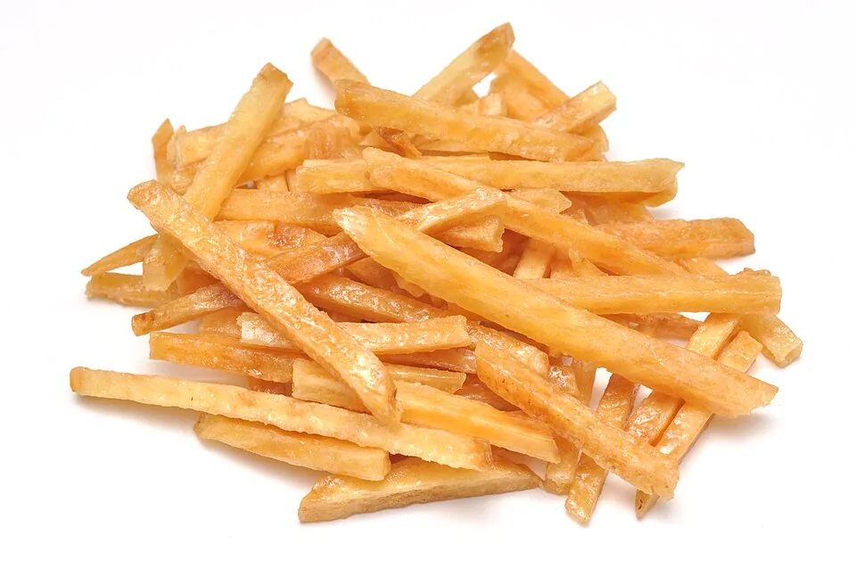
Thin sticks of sweet potato, fried until crisp and coated with sugar. In Nihonbashi,
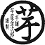
Imoya Kinjiro fries them in the shop. Look for 揚げたて on the sign for the freshly fried batch. -
Paolo fromTOKYO · Premium Kaminari Hot Sauce

Premium Kaminari · Original Look for Kaminari on the box. The Original blends Japanese soy sauce, fermented kanzuri chili paste and Carolina Reaper. The milder Umami Ocean uses habanero. Paolo lists a 24-hour vending machine at Shibuya BEAM’s main entrance, about 35–45 minutes by transit and on foot from your Tokyo hotel.
-
Ninja Meshi gummies · 忍者めし

Kyoho grape packaging These are firm, chewy candies made by UHA Mikakuto. Look for 忍者めし on the packet. 巨峰 is Kyoho grape and ラムネ is ramune soda. 鉄の鎧 is the crunchy-coated “Iron Armor” version.
Try the candy aisle near the hotel · Don Quijote Sakae. Selection varies.
-
Japanese snacks
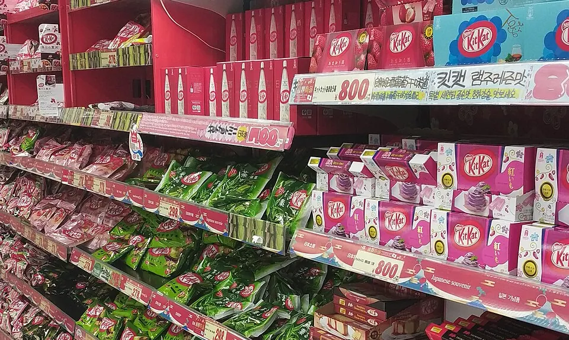
Kit Kats in Osaka For pasalubong you can share, look for regional Kit Kats, Bourbon Alfort biscuits, Tokyo Milk Cheese Factory biscuits or a Yoku Moku cookie tin. For a snack to eat along the way, check 7-Eleven for pancake sandwiches.
-
KitKat · Uji matcha

宇治抹茶 means Uji matcha. Look for the green box. Matcha KitKats have green-tea-flavored coating around the wafer. JAL PLAZA lists an airport edition made with Uji matcha.
Don Quijote Sakae is a convenient candy-aisle check for matcha varieties. JAL PLAZA’s airport-edition listing.
-
KitKat · Japanese sake

The red box reads 日本酒 (Japanese sake) and 満寿泉 (Masuizumi). Yes, sake KitKats exist. Nestlé’s Masuizumi edition uses sake from Toyama. It contains alcohol, so choose the matcha variety for anyone avoiding alcohol.
JAL PLAZA lists this flavor at Narita T2 Gates 63 and 98. Check your departure gate before making the walk. Availability can change.
-
Tokyo Banana · banana-custard sponge cakes

The original box says 東京ばな奈「見ぃつけたっ」. The original is a soft sponge cake filled with banana custard. The pieces are individually wrapped for sharing. Check the best-before date when buying a box for Manila.
Tokyo Banana’s First Avenue shop is just outside the Yaesu Underground Central Gate at Tokyo Station.
-
Pocky · chocolate biscuit sticks

The classic red box has chocolate-coated sticks with a bare biscuit handle. This is the everyday Glico snack. Look for ポッキー in the sweets aisle. The thin sticks and small packs make these easy to share.
Check the 7-Eleven near the Nagoya hotel or Don Quijote Sakae. Flavors vary by shop.
-
Bâton d’or · butter pretzel sticks
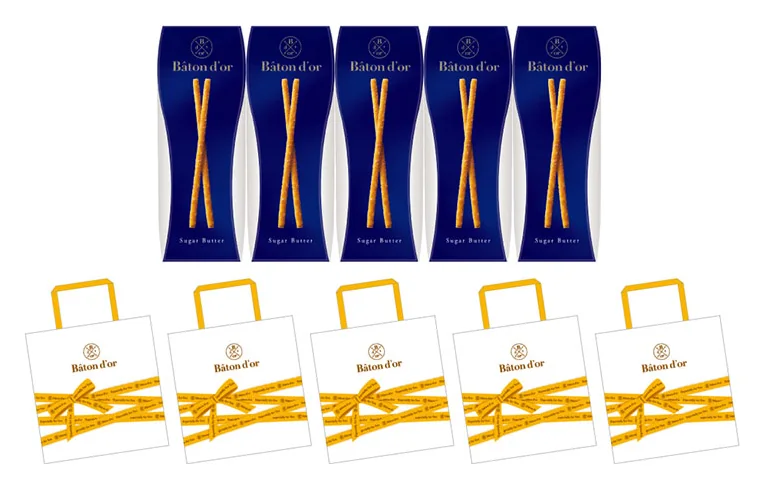
Sugar Butter gift set. Photo from Takashimaya. Bâton d’or (バトンドール) is Glico’s premium gift line. The Sugar Butter version is a butter-rich pretzel coated in sugar. Some other versions have a chocolate coating.
Glico’s permanent shops and pop-up listings include Osaka and Kyoto. A counter on your November Nagoya, Tokyo or Narita route is unconfirmed.
-
Horinishi · outdoor seasoning

The original shaker has a white label marked ほりにし. A savory seasoning to shake over grilled meat, vegetables or eggs. In a supermarket, try the spice aisle and look for アウトドアスパイス ほりにし.
Maruetsu Petit near the Tokyo hotel is a convenient place to ask. LIFE supermarket and Summit Store are other grocery leads. Branch stock is unconfirmed. Bic Camera’s stock checker for the original 100 g bottle.
-
Matcha powder
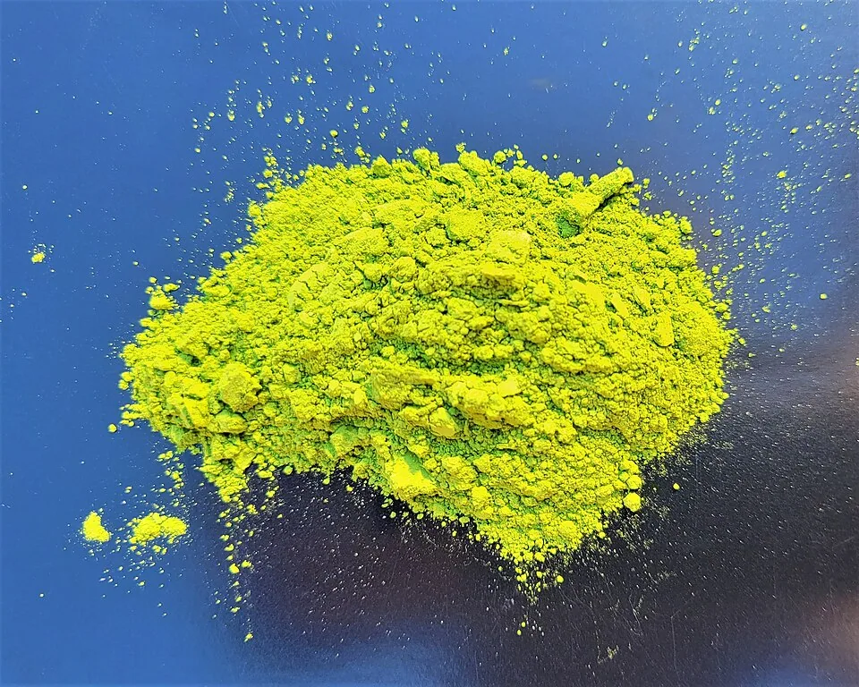
Ask for Ippodo matcha if you’d like powdered green tea to whisk at home. In Sakae, look for the Ippodo counter on Mitsukoshi’s basement food floor.
-
ROYCE’ Nama Chocolate
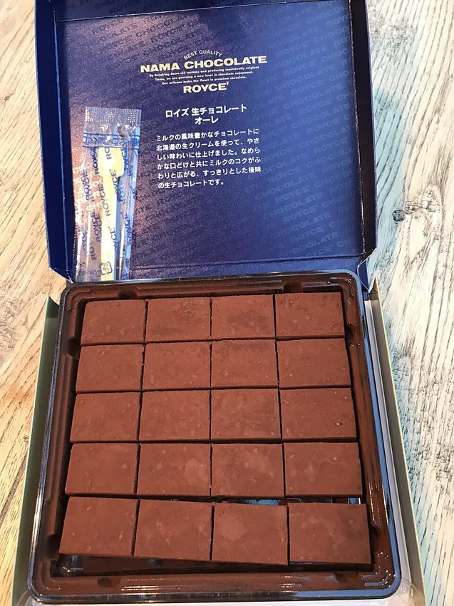
ROYCE’ Nama Chocolate comes in soft squares that need to stay cool. Ask about a cold pack for your flight to Manila. JAL PLAZA near Narita T2 Gate 91 lists the chocolates.


Clothes, shoes and watches
-
GU and UNIQLO
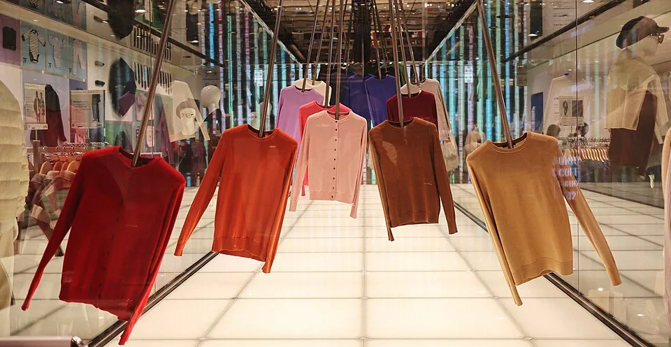
UNIQLO Ginza At Sakae SKYLE, UNIQLO is on 5F and GU is on 6F. Both brands also share JR Gate Tower by your first hotel and Marronnier Gate Ginza 2 in Tokyo. For a custom UTme! print, use the separate UNIQLO Ginza flagship at 6-9-5 Ginza.
Sakae SKYLE · Nagoya Station · Both brands in Ginza · Ginza flagship and Onitsuka Tiger · Narita shops · T2 UNIQLO
-
OAO sneakers

THE CURVE 1 Show the letters OAO to staff. The Japanese footwear brand lists CS Case Study at JR Nagoya Takashimaya, NUBIAN at Nagoya PARCO in Sakae, and PARIGOT at GINZA SIX in Tokyo. Ask for your model and size before making a special trip.
-
Used and vintage watches

1970 Seiko Lord Matic from the FIREKIDS catalogue Start at BOOKOFF SUPER BAZAAR Sakae-SKYLE, 8F, or visit Trefac Style near your Nagoya hotel. In Tokyo, HARD OFF Akihabara No. 1 has a wristwatch floor and MODE OFF Ueno Okachimachi lists watches. In Narita, OFF HOUSE Tomisato Inter has a watch department. Selection changes as items sell.
At FIREKIDS Ginza Nine you can browse individual vintage watches. Its Ginza shop is about 400 m from the UNIQLO Ginza flagship. If you’re considering a watch, ask about servicing, replacement parts and the written warranty.
The Tokyo City Flea Market at Oi Racecourse is scheduled for Saturday, November 28, 09:00–14:30, weather permitting. It’s about 10.7 km by walking route from the Tokyo hotel. You’ll already be in Narita that day. The Oedo Antique Market’s November 23 date is before your arrival, and the autumn Tokyo Nomi no Ichi in Tachikawa runs October 31–November 3. Narita’s old monthly temple antique market ended in 2024.
FIREKIDS directions and flea-market dates · Nagoya watch shops · Akihabara · MODE OFF · Tomisato
-
#FFFFFFT · plain white T-shirts
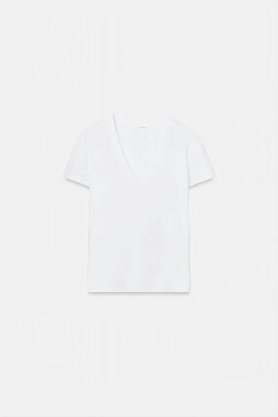
Example of the style sold at #FFFFFFT This specialist shop in Sendagaya sells plain white tees in different cuts and fabrics. It’s about 7.5 km on foot from APA Kayabacho. Its usual hours are Saturday 12:00–19:00 and Sunday 12:00–18:00, with occasional closures. Your Tokyo stay is Thursday to Friday, November 26–27. Saturday is your Narita fieldwork and flight day.
-
Prescription glasses
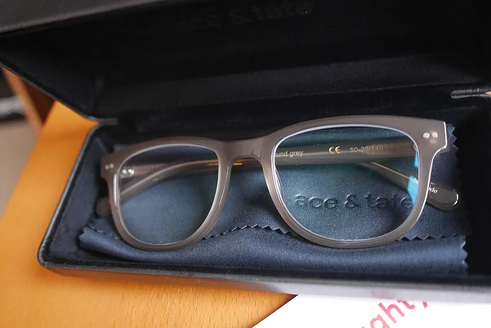
JINS, Zoff and OWNDAYS sell prescription glasses. Ask for the total price and the date your lenses will be ready before paying.


Gifts and everyday items
-
Kameyama Candle House · White Tea & Jasmine

White Tea & Jasmine · A4780590 Look for 香るキャンドル ホワイトティー＆ジャスミン. The candle comes in a clear glass jar with a white label and green corner. Show staff item A4780590 to distinguish this scent from other Kameyama candles.
Ask at Hands in Nagoya Station. The chain lists this candle. Branch stock can change.
-
SHIMBI METHOD · Double Enzyme Cleansing Foam

Double Enzyme Cleansing Foam · 120 g Look for Ｗ酵素洗顔フォーム on the 120 g white can. It dispenses ready-made facial cleansing foam. The brand identifies the two enzymes as protease and papain. Show barcode 4582469495116 if staff are checking the shelf or stockroom.
Matsumoto Kiyoshi near APA Nagoya · Sakae Loft. Both chains list it online.
-
Kao MegRhythm · lavender steam eye mask

Match the photo to めぐりズム, ラベンダーの香り (lavender scent) and 12枚 (12 masks). The box you showed is a pack of individually wrapped, single-use warming eye masks. The lavender version comes in an orange box with purple flowers. Check the scent and pack count because several variants share this design.
Matsukiyo in ESCA near APA Nagoya is the first stop to try. Matsukiyo and Cocokara Fine share an online catalog. Don Quijote Sakae is another place to ask. Kao’s exact 12-pack · product code 4901301460578.
-
Panasonic LAMDASH Palm In

Panasonic Palm In LITE A palm-sized electric shaver sold as ラムダッシュ パームイン. Ask for ES-P330U-H for the three-blade LITE in gray, or ES-PV70-P for the pink five-blade model. Bic Camera lists stock by branch.
Bic Camera near APA Nagoya and current stock · Yodobashi Camera and EDION directions
-
Mame bonsai · kuromatsu growing kit

HACO MAME · black pine 豆盆栽 (mame bonsai) means a miniature bonsai. 黒松 (kuromatsu) means Japanese black pine. One matching kit, HACO MAME, lists a tiny pot, seeds, expanding growing medium and instructions. Check the box for shears because contents vary by kit.
Ask at Sakae Loft about black pine kits · Philippine seed rules and packing shears
-
Train departure-melody player

A JR East departure-bell switch model A little push-button player plays a station’s departure tune. Ask which tunes GENERAL STORE RAILYARD in Akihabara has. TRAINIART inside Tokyo Station also carries railway souvenirs. What the real platform jingles mean.
-
Anime figures and character goods

The figure section at HOBBY OFF Akihabara. Try Animate for new merchandise and Lashinbang for pre-owned figures, acrylic stands and character goods. In Nagoya, the two shops are a four-minute walk apart. In Tokyo, Nakano Broadway puts HAL Shop, Havikoro Toy, ROBOTROBOT, Mandarake, One up. and Lashinbang in one building.
Nagoya hotel to Animate and Lashinbang · Mandarake Nagoya · Nakano floor guide · Akihabara shops · HOBBY OFF near Narita
-
Capsule-toy keychains
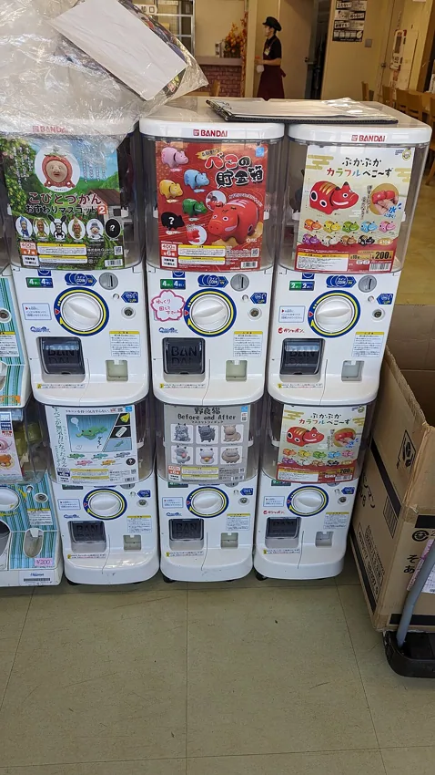
Look at the prize card on each machine. At #C-pla, the picture on each machine shows the possible prizes. Check the price and accepted coins before turning the handle. Your Sakaechika branch is already on the itinerary.
-
B-SIDE LABEL stickers

One B-SIDE LABEL design Look for illustrator-designed stickers and luggage tags. Sakae Loft is a listed stockist. For a dedicated shop, there’s one in Osu and another before security at your departure terminal.
-
uni Kuru Toga · mechanical pencil

The KS model. Look for クルトガ and the lead size on the package. The pencil turns the lead a little as you lift it between strokes, helping the tip wear evenly. The KS comes in 0.3 and 0.5 mm. Buy refill leads in the same size as the pencil.
Sakae Loft, NOVA 5F or Hands at Nagoya Station. Ask at Sekaido at Nagoya PARCO or Ginza Itoya if you want to compare models.
-
Pilot FriXion · erasable ink pens and refills
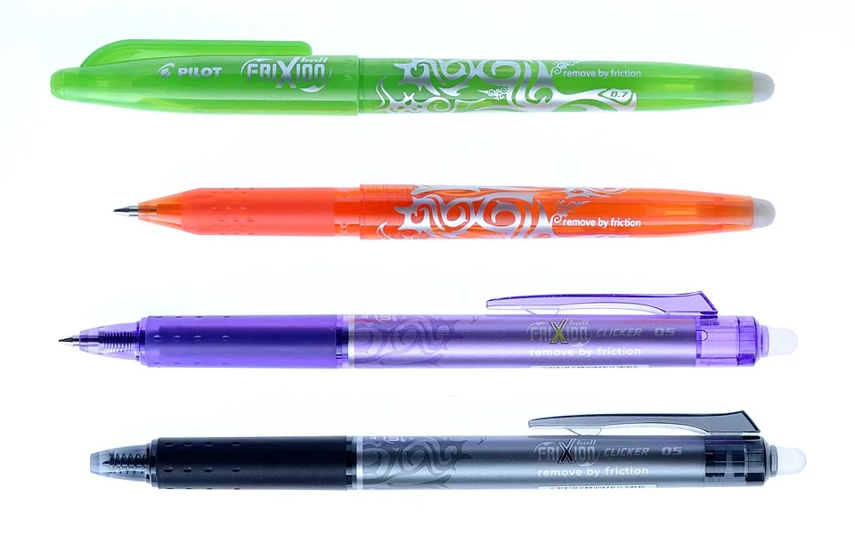
Pilot FriXion erasable pens Look for FriXion (フリクション) on the barrel. FriXion Ball is the erasable-ink pen line and FriXion Light is the highlighter. For a refill, match the pen model and tip size on the pack. Try it on a sample pad. Heat can make the writing disappear, so use permanent ink for official forms.
Sakae Loft, NOVA 5F or Hands at Nagoya Station. Two specialist stops on optional shopping outings are Sekaido at Nagoya PARCO and Ginza Itoya.
-
Kokuyo Campus · notebooks

Campus is the series name. Check the size and ruling on the cover. B5 gives you more writing space. A5 packs more easily. Compare plain ruled pages with dotted ruling, which gives you guides for lining up diagrams or notes.
Sakae Loft, NOVA 5F, Hands at Nagoya Station, Sekaido at Nagoya PARCO or Ginza Itoya. The exact size and cover design depend on branch stock.
-
Thermos · lightweight water bottle

Thermos JNL-S350 · 350 mL, about 200 g empty. This compact insulated bottle has a one-touch lid. Try the lock with one hand and check that the bottle fits your bag pocket.
Hands at Nagoya Station is on the hotel shopping route. Show the model code JNL-S350 in the kitchenware section. Thermos specifications.
-
Zojirushi · lightweight water bottle

Zojirushi SM-ZB36 · 360 mL, about 200 g empty. Look for the elephant logo. This vacuum-insulated bottle has a screw lid with an integrated gasket. The similar SM-ZB48 is larger and heavier, so check the code on the box.
Hands at Nagoya Station or Bic Camera by APA Nagoya are places to check housewares. Zojirushi’s size and weight table.
-
Woven omamori · Japanese charm pouch

Fuku Fuku Lip, one documented Loft example. The woven pouch holds lip cream. Ask for an omamori-bukuro (お守り袋), a charm pouch. Loft has featured Fuku Fuku Lip (福福リップ) in a Fujiyama-woven pouch. The exact design you saw and its silk content are unconfirmed.
If you specifically want pure silk, look for 正絹 (shouken) or 絹100% on the material label. This maker’s silk pouch shows what that description looks like.
Sakae Loft, NOVA 5F is already on your route. Show staff the Japanese words or the photo and ask what they have that day. Loft’s original product announcement.
-
Personalized chopsticks
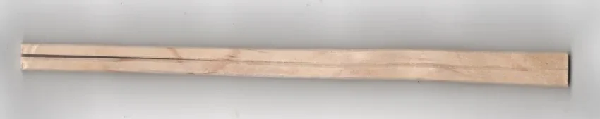
Plain pair before engraving Some specialty shops engrave a name on a pair of chopsticks. Ask whether the shop engraves on site and when the pair will be ready. Asakusa’s Nakamise shopping street is one area to explore on a longer Tokyo stay.
-
Japanese kitchen knives
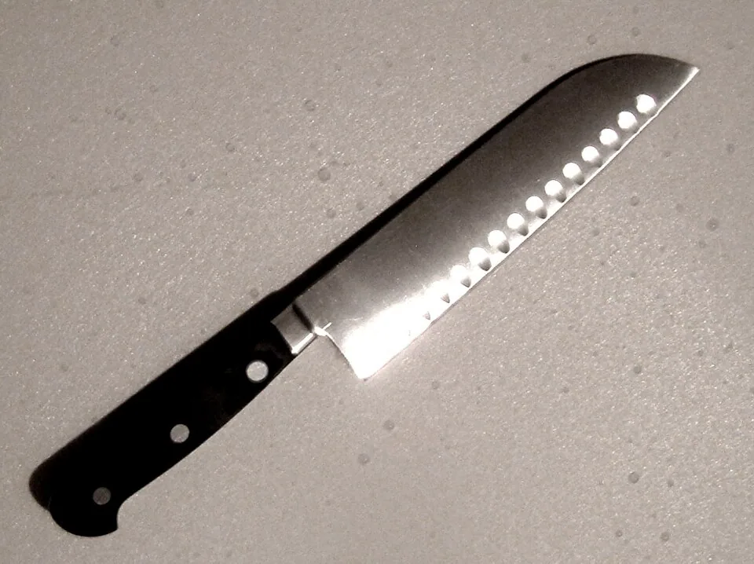
Santoku kitchen knife Browse the cooking utensils at Don Quijote in Sakae. Tower Knives is a specialist in Osaka and Tokyo. Before buying a kitchen knife for home, check your booked baggage and how to pack the blade.
-
Japanese nail clippers

KAI type001M Look for KAI on the grooming shelves at Don Quijote. Compare the compact and full-size models, and check the country-of-origin label if you want a Japanese-made pair.
-
Skincare and sunscreen

ANESSA Perfect UV Sunscreen Skincare Milk Look for ANESSA sunscreen in the beauty section at Don Quijote or a drugstore. Check the formula on the label when comparing the gold bottles.
-
Clear umbrellas
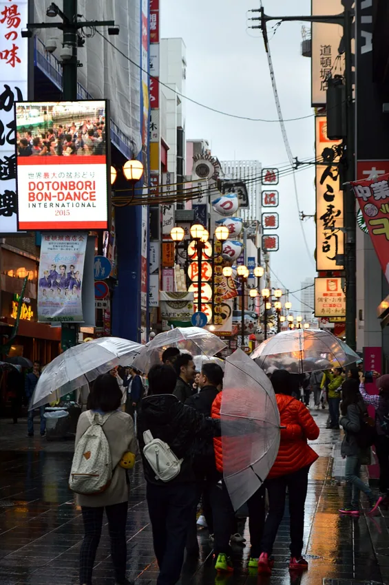
Look for the see-through dome and curved handle near a convenience-store entrance. It’s an easy item to pick up if rain catches you on the walk from the hotel.
-
Suitcases
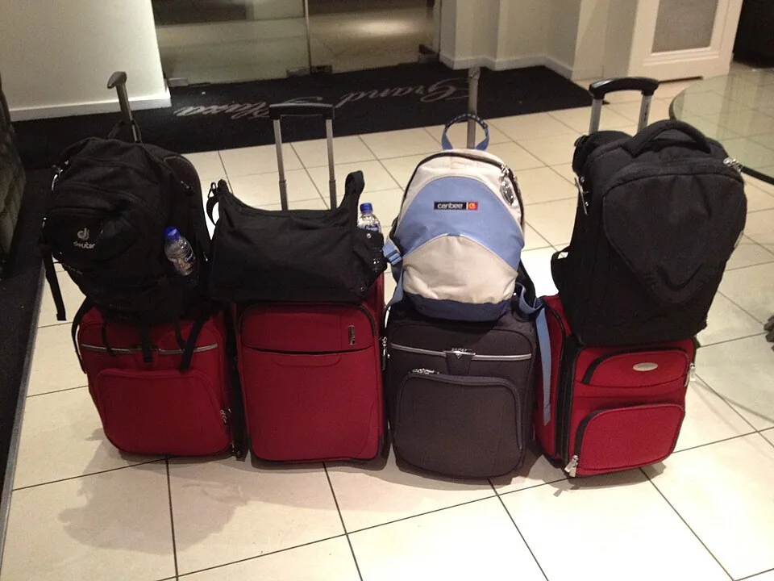
Don Quijote carries luggage. Compare the empty weight and dimensions with your booked baggage allowance before you buy a case.


Taking shears and seeds home to Manila
Garden shears and kitchen knives go in checked baggage. Close and cover the blades, pack them securely, and hand over the bag at the Cebu Pacific counter before security at Narita T2. If you have only cabin baggage, leave the shears or knife at the shop. For unusual blade sizes, confirm acceptance with Cebu Pacific before buying.
The Panasonic electric shaver can go in your carry-on. Switch it off and fit its protective cover so it cannot turn on accidentally.
Check the seeds before buying the kit. The Philippine Bureau of Plant Industry (BPI) requires advance plant-quarantine clearance for seeds intended for planting. Give BPI the species, Pinus thunbergii, the origin (Japan) and the exact growing medium on the box. Confirm whether it may enter and obtain the required clearance and Japanese phytosanitary certificate before bringing it home. Declare it on arrival for inspection, even if sealed or packed in a checked bag. Without the paperwork, choose a clean, empty bonsai pot and buy seeds in the Philippines.
Sources
Product photos and specifications: Kao · uni Kuru Toga · Pilot FriXion · Kokuyo Campus · Thermos · Zojirushi · Horinishi · Matcha KitKat · Sake KitKat · Tokyo Banana · Pocky package · Bâton d’or gift set · Fuku Fuku Lip design.
Imoya Kinjiro · UHA Ninja Meshi · Iron Armor gummies · OAO stockists · #FFFFFFT owner’s shop details · FIREKIDS branches.
Panasonic Palm In LITE · HACO MAME kit contents · Loft’s black pine kit · Narita baggage restrictions · Japan’s electric-shaver guidance (PDF) · Philippine BPI import requirements · Japan’s plant export inspections.
Tokyo City Flea Market dates · Oedo Antique Market · Tokyo Nomi no Ichi · Narita market closure.
New shopping references · Kameyama candle · Hands listing · Paolo’s flavors and Shibuya machine · SHIMBI METHOD · Matsukiyo listing · Loft listing.
Item photos and licenses
Figure-shelf photo from HOBBY OFF Akihabara.
Product photos from UHA Mikakuto · PARIGOT · FIREKIDS · Panasonic · TSUGi · JR East · B-SIDE LABEL · KAI · Shiseido · Kameyama · Paolo fromTOKYO · SHIMBI METHOD.
Wikimedia Commons photos are resized and converted to WebP. The chopsticks image is also rotated.
- Imo kenpi by Ocdp · CC0
- Matcha by Pinnaclematcha · CC BY-SA 4.0
- Chocolate by Antonio733 · CC BY-SA 4.0
- Clothing by MIKI Yoshihito from Sapporo City,Hokkaido., JAPAN · CC BY 2.0
- White tees by Paulinaela · CC0
- Eyeglasses by Franklin Heijnen · CC BY-SA 2.0
- Capsule toys by contri · CC BY-SA 4.0
- Stationery by Simon A. Eugster · CC BY-SA 3.0
- Chopsticks by Ser Amantio di Nicolao · CC BY-SA 4.0
- Kitchen knives by The original uploader was Plonk420 at English Wikipedia. · CC BY-SA 2.5
- Umbrellas by DimiTalen · CC0
- Luggage by Kathryn Greenhill · CC BY-SA 2.0
- Kit Kat shelf (cropped) by Haha169 · CC BY-SA 4.0


.jpg){kind=link}


_(53277912977).jpg){kind=link}


Photo by Ubahnverleih · CC0.